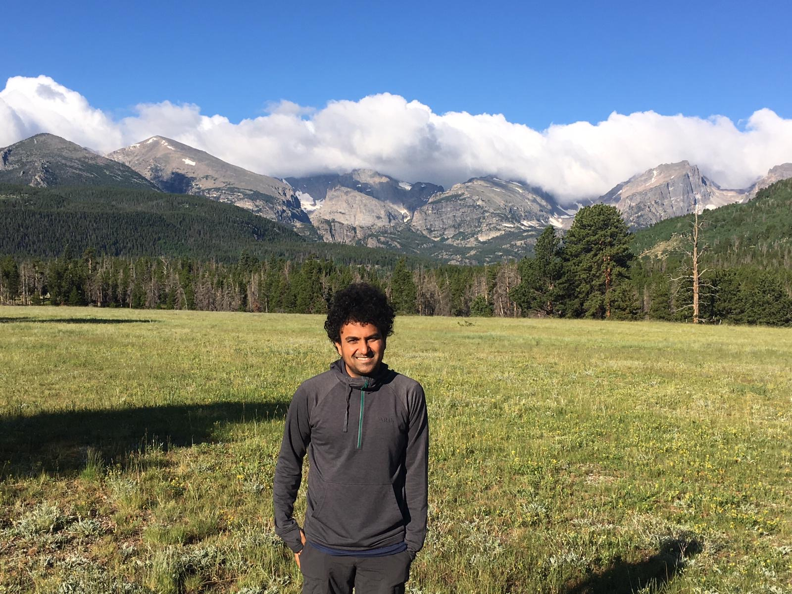

Karthik Bharath
Associate Professor ✉ Karthik.Bharath@nottingham.ac.uk
School of Mathematical Sciences ☎ +44 1157486063
University of Nottingham Google Scholar Profile
Nottingham, UK
Research Interests
Geometric statistics; functional and shape data analysis; stochastic processes; quantum information.
Research funding
- Engineering and Physical Sciences Research Council (UK) : EPSRC EP/V048104/1 (2021-2023)
- National Science Foundation (USA) : NSF DMS-2015374 (2020-2023), NSF DMS-1613054 (2016-2020)
- National Institutes of Health (USA) : NIH R37-CA214955 (2017-2022)
- Bloomberg Data Science Grant (2017-2018)
Service
- Board Member, Royal Statistical Society.
- Member of the Research Section Committee of the Royal Statistical Society responsible for administrating discussion papers.
- Associate Editor, Journal of the Royal Statistical Society, Series B.
- Associate Editor, Sankhya Series A.
Articles
- Variograms for spatial functional data with phase variation (with X. Guo and S. Kurtek).
- A diffusion approach to Stein's method on Riemannian manifolds (with H. Le, A. Lewis and C. Fallaize).
- Joint quasiprobability distribution on the measurement outcomes of MUB-driven operators (with H. S. Smitha Rao and S. Sirsi).
- Unsharp measurements, joint measurability and classical distributions for some qudits (with H. S. Smitha Rao and S. Sirsi).
- Bayesian framework for simultaneous registration and estimation of noisy, sparse and fragmented functional data (with J. Matuk, S. Kurtek and O. Chkrebtii). Journal of the American Statistical Association (2021+)
- Discussion on 'On a class of objective priors from scoring rules' (with I. H. Jermyn). Bayesian Analysis (2020+)
- Analysis of shape data: From landmarks to elastic curves (with S. Kurtek). WIREs Computational Statistics (2020+)
- Biomedical applications of geometric functional data analysis (with S. Kurtek, J. Matuk and S. Mohammed). In Handbook on variational methods for nonlinear geometric data (2020+)
- Distribution on warp maps for alignment of open and closed curves (with S. Kurtek). Journal of the American Statistical Association(2020) [talk]
- Geometric variational approach to Bayesian inference (with A. Saha and S. Kurtek). Journal of the American Statistical Association (2020)
- Invariance and identifiability issues for word embeddings (with R. Carrington and S. P. Preston). Neural Information Processing Systems (NeurIPS)(2019)[talk]
- Mutually disjoint, maximally commuting set of physical observables for optimum state determination (with H. S. Smitha and S. Sirsi). Physica Scripta (2019+)
- Radiologic image-based statistical shape analysis of brain tumors (with S. Kurtek, A. Rao and V. Baladandayuthapani). Journal of the Royal Statistical Society (Series C) (2018) [talk]
- Statistical tests for large tree-structured data (with P. Kambadur, D. K. Dey, A. Rao and V. Balandayuthapani). Journal of the American Statistical Association (2017) [talk]
- Geometric approach to visualization of variability in functional data (with W. Xie, S. Kurtek and Y. Sun). Journal of the American Statistical Association (2017)[talk]
- Multiaxial Representation of N-qubit Mixed Symmetric Separable States (with S. P Suma, S. Sirsi and S. Hegde). Physical Review A (2017)
- Invited discussion on 'Sparse graphs using exchangeable random measures'. Journal of the Royal Statistical Society (Series B) (2017)
- POVM construction: A simple recipe with applications to symmetric states (with S. Sirsi, S. P. Shilpashree and H. S. Smitha Rao). International Journal of Quantum Information (2017)
- DEMARCATE: Density-based Magnetic Resonance Image Clustering for Assessing Tumor Heterogeneity in Cancer (with A. Saha et al.). NeuroImage (2016) [talk]
- Functional data analysis techniques for the study of structural parameters in polymer composites (with S. Rudrappa et al.). Journal of Applied Crystallography (2016)
- Bayesian sensitivity analysis with Fisher-Rao metric (with S. Kurtek). Biometrika (2015) [talk]
- Spacings around an order statistic (with H. N. Nagaraja and F. Zhang). Annals of the Institute of Statistical Mathematics (2015).
- On a clustering criterion for dependent observations. Journal of Statistical Planning and Inference (2014)
- Can tests for jumps be viewed as tests for clusters? (with V. Pozdnyakov and D. K. Dey).
- Asymptotics of a clustering criterion for smooth distributions (with V. Pozdnyakov and D. K. Dey). Electronic Journal of Statistics (2013)
- Asymptotics of the Empirical Cross-over Function (with V. Pozdnyakov and D. K. Dey). Annals of the Institute of Statistical Mathematics (2013)
- A note on density estimation for binary sequences. Statistics and Probability Letters (2013)
- Test to distinguish a brownian motion from a brownian bridge using Polya process (with D. K. Dey). Statistics and Probability Letters (2011)
|